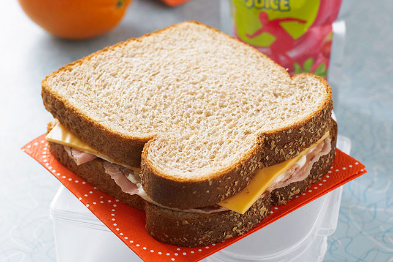

Ham and Cheese Sandwich

Description:
The Ham and Cheese sandwich is a lovely, divine treat that will surely raise the spirits of any that dare to attempt a construction
of this simply ambrosic meal. Despite being divine in taste, the process is more demonic than anything else you know, so be prepared.
Ingredients:
- Ham or honey Ham
- Cheese, preferably swiss, provolone, or meunster.
- Bread
- OPTIONAL: Mayonaisse
- OPTIONAL: Mustard, spicy brown or yellow
If these ingredients are hard to find, call your priest for help!
How to Make!
- First, get 2 (two) slices of bread, separate them from inbetween each other, and set them out in front of you.
- Next, if you have mayo and mustard, please apply a thin and even layer of each to both pieces of bread. Keep i mind
that if you do not apply even amounts of the ingredients, you will have to perform an exorcism.
- Continuing on, start to place your slices of ham ontop of your mayo or mustard. It does not matter which slice
you choose for this step, as God will make sure your performance is of His ultimate plan.
- Next, please mirror what you did in the previous step on the other slice of bread with the cheese. Make sure
to put a 1:1 ratio of cheese to ham for an even eating experience. Taste is king!
- Finally, reassemble the pieces of bread in the exact same orientation you found them in originally, making sure to touch the
sides that have the ingredents on them, and then take a bite! If you don't take a bite within 30 seconds, you will have to fight
a demon, and even if you will, the demon will have eaten your sandwich, meaning you must start over.
That's it!
Now that you've made your sandwich and taken a bite, you can continue to take more bites! Doing so will slowly fuel your body and turn you
into the ultimate organic machine. If your body needs more, simply repeat the process above.
To Top